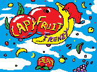

As a final project for my ECE244 Digital Systems course, I created an FPGA shooter game.
I would like to present:
Capybara Fruit Frenzy
Capybara Fruit Frenzy is an interactive single player game that involves numerous falling fruits that are continuously dropping from the sky. The goal of the game is to prevent these falling fruits from hitting the capybaras at the bottom of the screen by navigating the reticle to the falling fruit.
- Use of arrows keys UP, DOWN, LEFT, RIGHT to control the target.
- When the coordinates of the target overlap with the fruits
(shown as squares on the display), the fruit resets to the of the screen at a new location.
and the score displayed on HEX1 increases by 1. - LEDRs on the FPGA blink to indicate the fruits are falling properly.
- Objects being drawn over the 160 by 120 pixel background.
Capybara Fruit Frenzy FPGA Game Video:
- Working logic for drawing fruits from a memory instantiation file over a coloured background.
- Generation of multiple fruits being drawn over the screen at randomized coordinates.
Capybara Fruit Frenzy Proper VGA Component Video:
Player Role: The player can use the up, down, left, and right arrow keys to move the target to the fruits. When the
target overlaps with the falling fruit, the player’s score increments, which is displayed on HEX1.
Game Over Condition: The player starts with five lives, losing one life each time a fruit hits the capybara (ie. bottom
of the screen). The player’s lives remaining are displayed on HEX0. The game ends when the player’s lives reaches 0.
The game components are displayed on:
- Computer screen to display the VGA graphics including the game page and falling fruits.
- FPGA board to display the player’s lives and score of the game.
Note: the fruits fall very slowly and only register collisions when it moves due to errors.
A more proper demonstration video with updated background with capybaras will be added soon.
Proper VGA Component is separate due to time constraints.